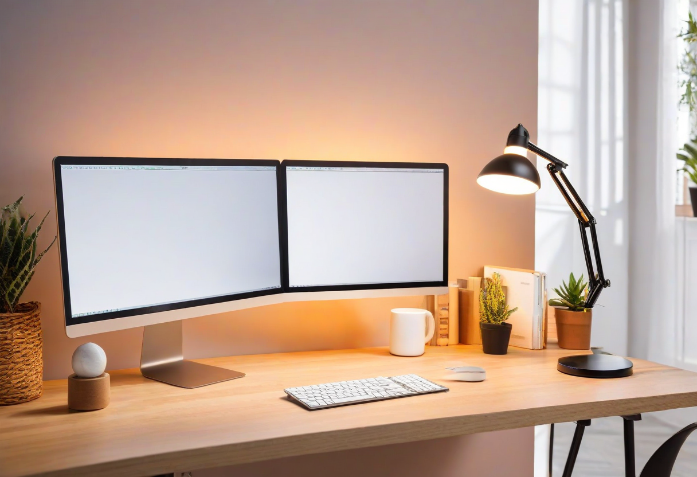

How Desk Lighting Affects Your Productivity (Science-Backed)

Cool blue light (4000-5000K) tells your brain it's daytime. Warm light (2700-3000K) signals evening. Use adjustable color temperature throughout the day.
The 90-Minute Cycle: first 90 minutes -- bright cool for focus. Breaks -- dim warm to relax. After lunch -- back to cool bright. From 4 PM -- gradually shift to warmer, dimmer light.
After sunset, avoid cool blue light. It disrupts melatonin production and makes it harder to fall asleep.
Explore more desk setups: Warm Cozy Workspace